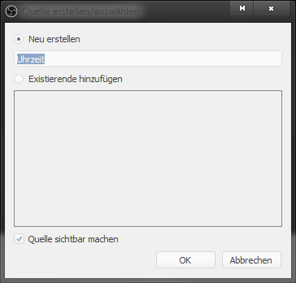
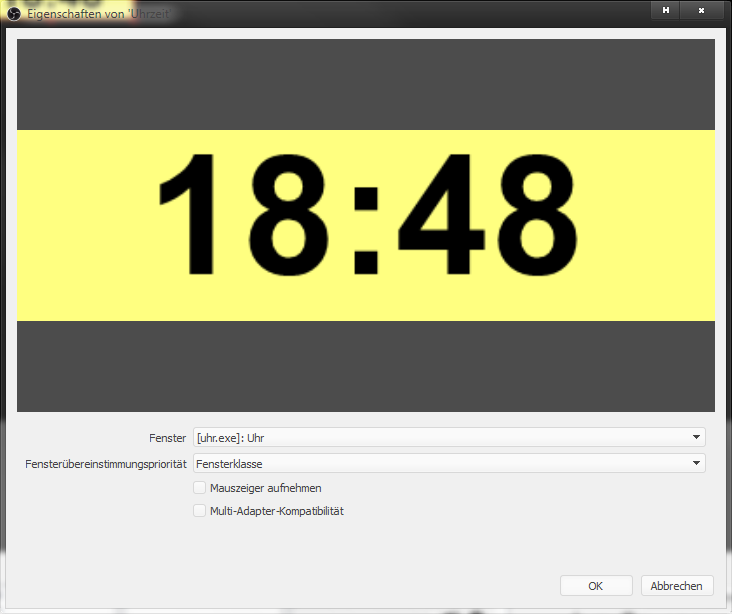
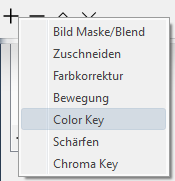
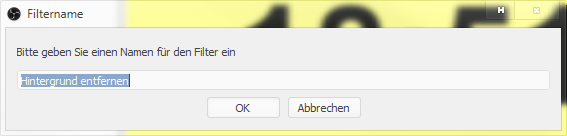
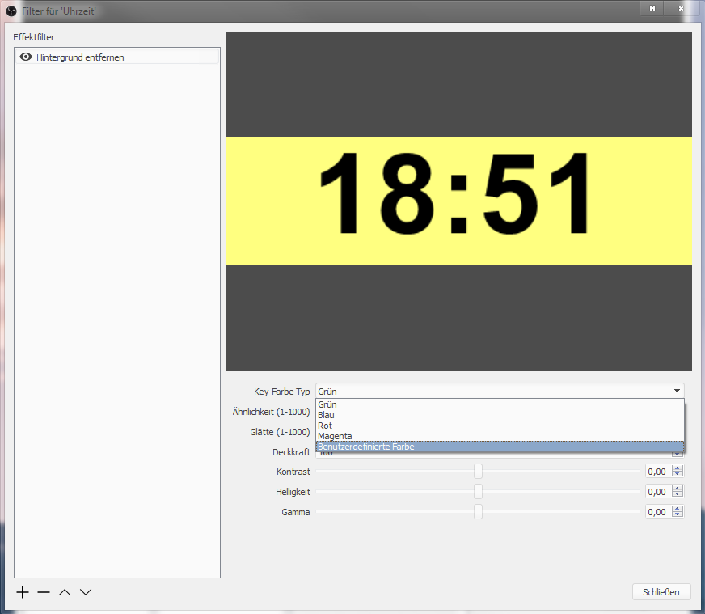
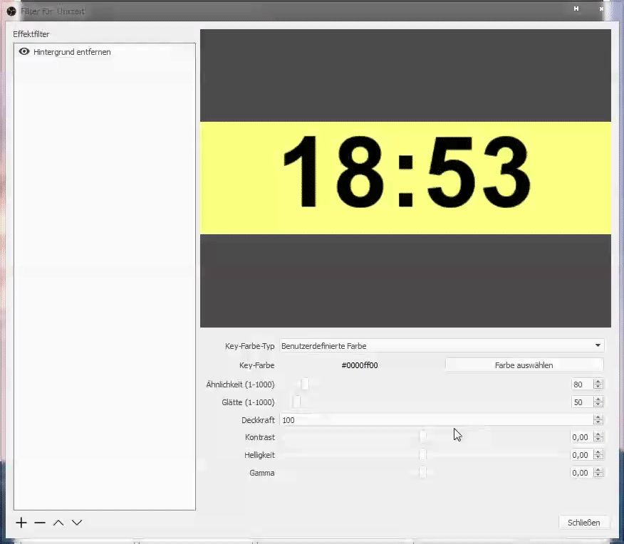
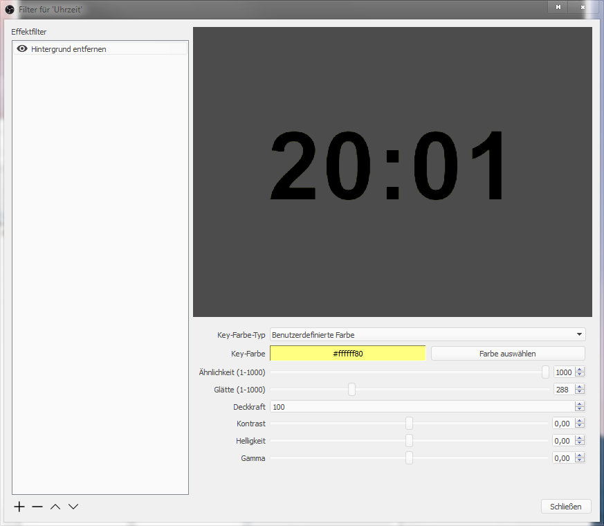
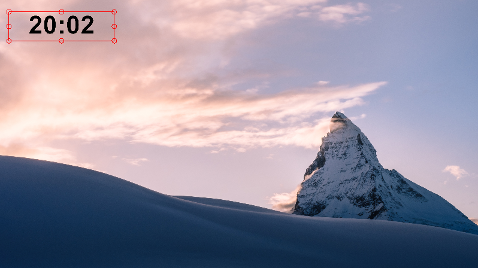

Systemvorraussetzungen: Windows 7 oder neuer, Microsoft .NET Framework 4.5 oder neuer, OBS Studio.
Lade das Programm herunter und starte es.
Systemvorraussetzungen: Windows 7 oder neuer, Microsoft .NET Framework 4.5 oder neuer, OBS Studio.
Lade das Programm herunter und starte es.
Füge eine neue Fensteraufnahme in OBS hinzu.
Gib ihr irgend einen Namen, z.B. Uhrzeit.
Wähle als Fenster uhr.exe.
Empfohlen: Entferne das Häkchen bei Mauszeiger aufnehmen.
Füge einen neuen Filter zur eben erstellten Quelle hinzu (rechte Maustaste auf die Quelle > Filter).
Im Quellenfenster füge einen Color Key-Filter hinzu (klicke dazu auf das + unten links und wähle dann Color Key).
Gib dem Filter einen beliebigen Namen, z.B. Hintergrund entfernen.
Wähle bei Key-Farbe-Typ Benutzerdefinierte Farbe.
Wähle nun, wie oben gezeigt, die Farbe aus.
Passe nun die Einstellungen unter Ähnlichkeit (1-1000) und Glätte (1-1000) an.
Fertig! Du kannst nun die Uhrzeit beliebig verschieben und in der Größe verändern.